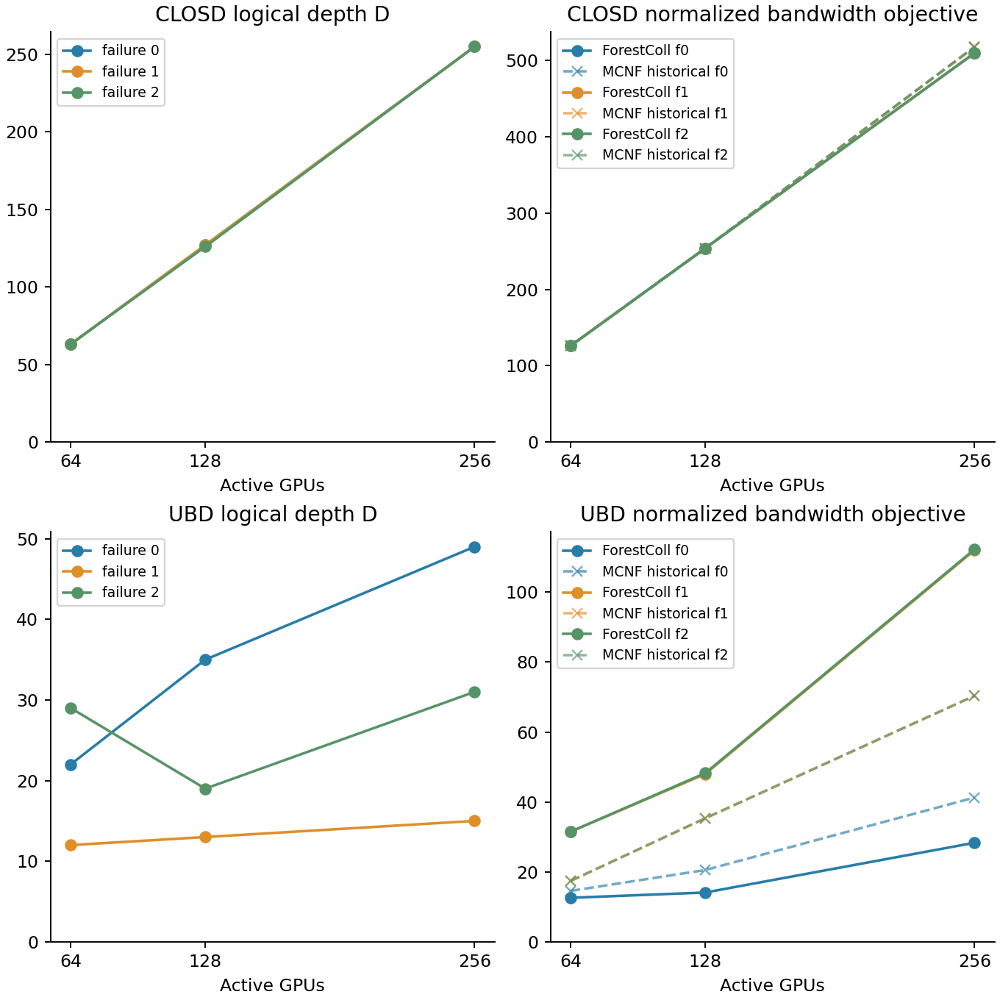

ForestColl：深度与带宽分别记录
ClosD + UBD · 64/128/256卡 × 坏0/1/2卡 · 未代入α、β
18/18 完整森林已验证。D：单阶段最大树深；2D：AllReduce最长依赖链；B∞：固定树与权重下、归约和广播重叠的带宽objective。
UBD
CLOSD
对比图
虚线为历史MCNF数值，其中部分未通过原空间验收；具体状态见表。

口径与复现
- 本轮按用户修订，只记录深度与带宽 objective，不代入论文的 α、β，不运行参数扫描。ClosD 和 UBD 各9行，共18行均保存完整树并通过容量校验。
- D 是单阶段逻辑树高；2D 是同一棵树先归约再广播的最长依赖链。逻辑树的一条边可以包含多个交换机物理跳，沿用 MCNF 的 GPU 间通信步定义。
- M=N：task.data_volume=1 经标准生成器扩大到N，每个根负责1单位，每个 elementary tree 负责1/k单位；压缩后的树记录chunks/k单位。容量和objective均沿用标准归一化单位。
- B∞按归约与广播合并后的逐物理边总负载计算，允许两个阶段流水重叠；不会强制全局阶段屏障。顺序执行的两个阶段objective也单独保留。
- 后续可用(2D)α+B∞β作为延迟项加拥塞项的估计；这两个独立极限不一定能在同一有限分块调度里同时达到，不能直接标作已验证执行时间。
- 这次测量的是开源默认的等分片AllGather生成树及其反向组合。论文§5.7明确指出，该组合不保证AllReduce全局最优；论文附录G的专门AllReduce优化LP未在此次适配中实现。
- UBD输入复用issue237归档，并显式填写当前标准带宽1/4/4/32/64。固定故障64:[13,2]、128:[26,5]、256:[52,11]均在原rack0；f2按既有替代策略启用rack0和rack1备用卡，不扩容。原标准文档中“两故障位于不同rack”的文字与实际输入不符，本实验以代码和归档的确切映射为准，未修改MCNF仓库。
- MCNF结果复用历史T12 main-only归档。UBD原始状态全部为optimal_inaccurate，保留原状态；仅64/f0与64/f1的原空间最大违反≤当前1e-4门槛。其余历史UBD数值仅供观察，不能据此宣称严格胜负。
- Java并行实现、JDK25（启用-ea断言）、common pool parallelism=4、Xmx4g。树的具体选择可能随集合遍历和并行运行变化；本次原始树及SHA256均保存。没有真实GPU网络执行，也没有把异机历史求解时间当成同机加速比。
- UBD256/f0首轮在900秒时限内未完成，失败尝试保留在ubd-standard-v1；重跑使用独立v2目录，初始3600秒观察时限在不重启Java工作进程的情况下延至5400秒；具体监督记录在deadline_override.json。表中合成时间指最终完成的一次尝试，失败尝试另见JSON中的attempts。
- 原ForestColl三阶段算法文件及MCNF源仓库均未修改。适配、报告、完整输出只在ForestColl fork内。
CSV · JSON与逐边瓶颈 · 说明与重跑命令 · 上轮ClosD有限T报告